Windows 11 installeren in VMware Workstation
Deze handleiding leert je hoe je een nieuwe virtuele Windows 11-machine aanmaakt in VMware Workstation Pro.
1. Een nieuwe virtuele machine aanmaken in VMware
1.1. New Virtual Machine
- Open VMware Workstation
- Klik rechtsboven op het menu "File"
- Selecteer vervolgens "New Virtual Machine"
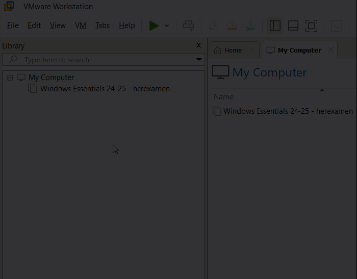
1.2. Wizard voor virtuele machines, deel 1:
In de New Virtual Machine Wizard:
- selecteer "Custom: advanced"
- selecteer "Hardware: VMware Workstation 17.5 or later" (afhankelijk van je versie van VMware Workstation)
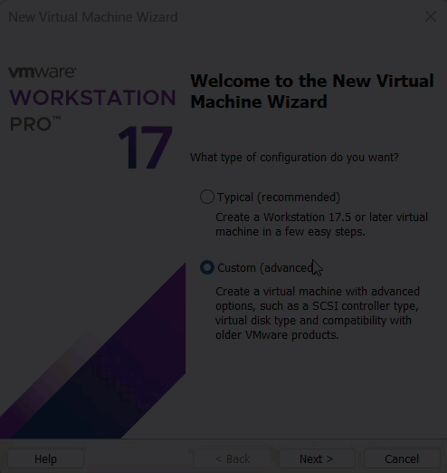
1.3. Wizard voor virtuele machines, deel 2:
In de New Virtual Machine Wizard:
- Selecteer de Windows.iso die je daarnet hebt gedownload.
- Geef de virtuele machine een logische naam.
- Klik op "Generate" om een encryptiewachtwoord aan te maken. (Je kan ook zelf een wachtwoord ingeven. Bewaar het goed: je hebt het nodig als je deze virtuele machine ooit wil verplaatsen en gebruiken op een ander toestel of op een andere locatie.)
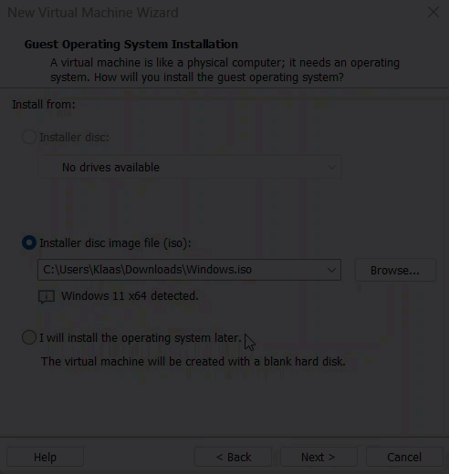
1.4. Wizard voor virtuele machines, deel 3:
In de New Virtual Machine Wizard:
- Selecteer Firmware type: UEFI
- Processors: laat de standaardwaarden staan
- Memory: 4096 MB (standaard)
- Network connection: gebruik network address translation (NAT)
- SCSI Controller: LSI Logic SAS
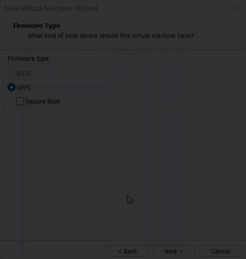
1.5. Wizard voor virtuele machines, deel 4:
In de New Virtual Machine Wizard:
- Virtual Disk Type: NVMe
- Disk: Create a new virtual disk
- Maximum Disk Size: 64 GB (de virtuele machine zal geen 64 GB opslagruimte op je schijf innemen. Ze gebruikt enkel de ruimte die nodig is, tot een maximum van 64 GB.)
- Disk File Name: laat de standaardwaarden staan
- Klik op Finish
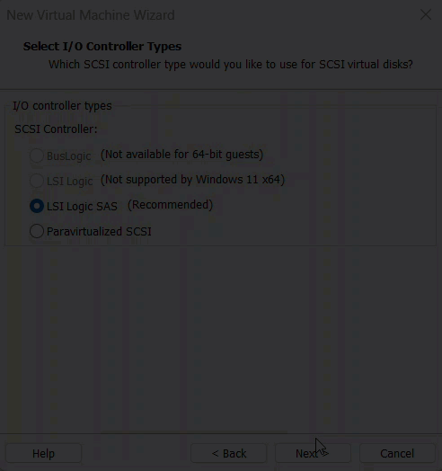
De virtuele machine wordt nu aangemaakt.
1.6. De virtuele machine starten
- Start de virtuele machine door te klikken op "Power on this virtual machine".
- Zodra het VMware-logo verschijnt, beweeg je je muis in het venster van de virtuele machine en klik je één keer ergens in dit venster.
- Wanneer je de melding "Press any key to boot from CD or DVD" ziet, druk je op een toets op je toetsenbord.
- Na enkele seconden zie je het Windows-logo.
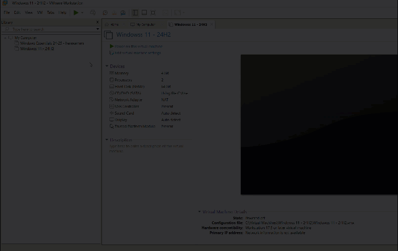
Zie je een melding "EFI Network..." of een blauw scherm met "Boot normally", dan heb je een stap overgeslagen of was je te laat met een van de handelingen. Sluit de virtuele machine af en probeer opnieuw.
2. Windows Installer
2.1. Windows-wizard, deel 1
Kies in de Windows-installatiewizard de volgende opties:
- Selecteer de taal
- Selecteer de toetsenbordindeling
- Selecteer "Windows 11 installation" als installatieoptie en vink "I agree that everything will be deleted,..." aan
- Klik op "I don't have a product key". Omdat we Windows in een labo-omgeving gebruiken, activeren we het niet.
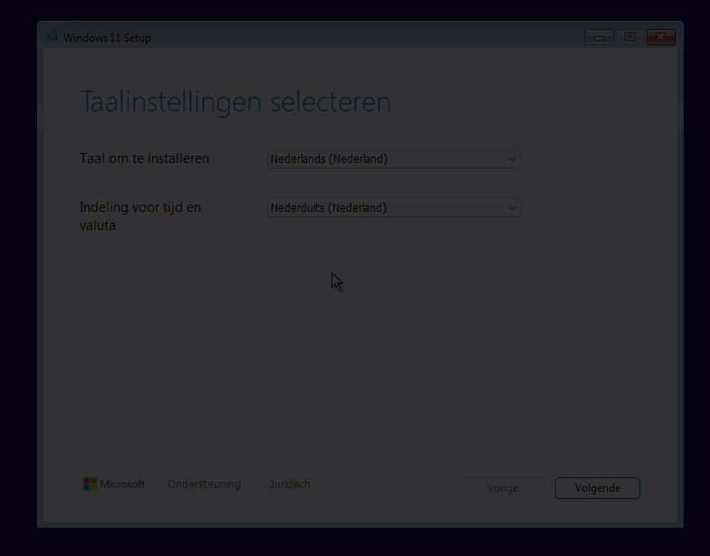
2.2. Windows-wizard, deel 2
Kies in de Windows-installatiewizard de volgende opties:
- Selecteer de editie: kies Windows 11 Education. Kies altijd voor de Education-editie van Windows, tenzij de instructies anders vermelden. Deze editie ligt het dichtst bij de Enterprise-versie en bevat de meeste beschikbare functies.
- Accepteer de licentieovereenkomst om verder te gaan.
- Kies de installatielocatie: klik gewoon op "Next" om verder te gaan. (Je ziet een overzicht van alle beschikbare schijven en partities. Omdat dit een schone virtuele machine is, is er slechts één niet-gepartitioneerde schijf.)
- Klik op "Install" om de installatie te starten.
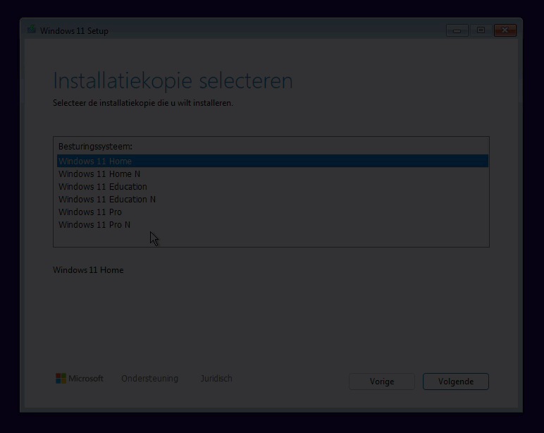
2.3. Windows-installatie
De installatie is nu gestart en duurt enkele minuten.
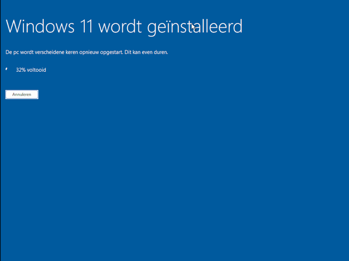
3. Windows OOBE
Zodra Windows 11 geïnstalleerd is, start de Out of Box Experience (OOBE). De Out of Box Experience (OOBE) is het initiële configuratieproces in Windows waarin je basisinstellingen zoals regio, gebruikersaccount en privacyvoorkeuren configureert.
3.1. OOBE, deel 1
Selecteer de volgende opties in de Windows OOBE:
- Kies het land: Belgium
- Kies je toetsenbordindeling: (Belgian Period voor AZERTY, US voor QWERTY)
- Tweede toetsenbordindeling: Skip
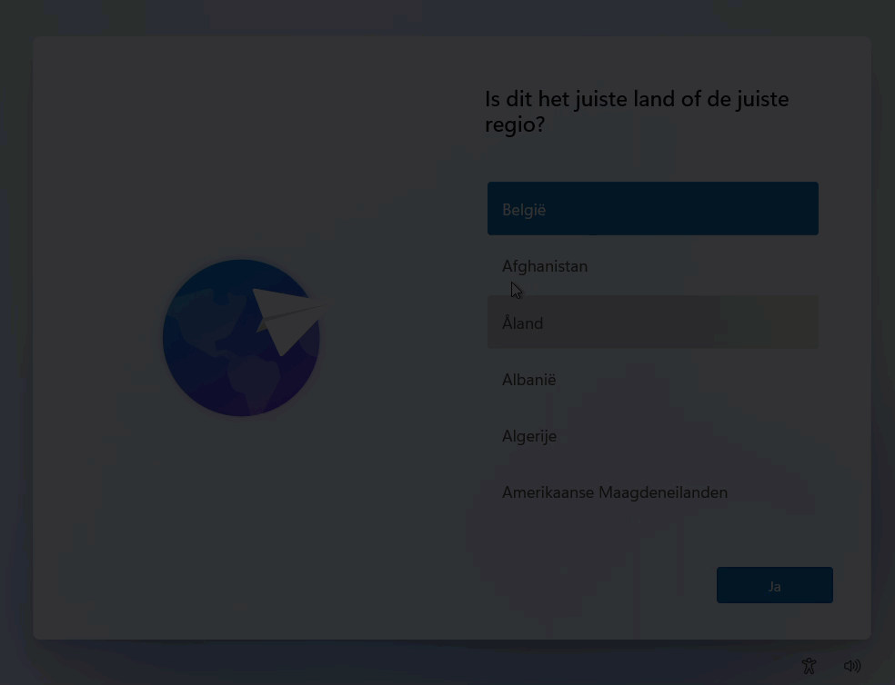
Windows zoekt nu naar updates. Dit kan enkele seconden tot enkele minuten duren.
3.2. OOBE, deel 2
In de volgende stappen van de Windows OOBE kiezen we ervoor om een lokale account aan te maken in plaats van een Microsoft 365-account te gebruiken.
- Selecteer "Sign-in options"
- Kies "Domain join instead"
- Geef een gebruikersnaam in (gebruik je eigen voornaam)
- Geef twee keer een wachtwoord in (bewaar het op een veilige plaats, bijvoorbeeld in een wachtwoordmanager)
- Kies drie beveiligingsvragen en beantwoord ze met iets willekeurigs (opmerking: we gebruiken beveiligingsvragen niet om je wachtwoord te herstellen)
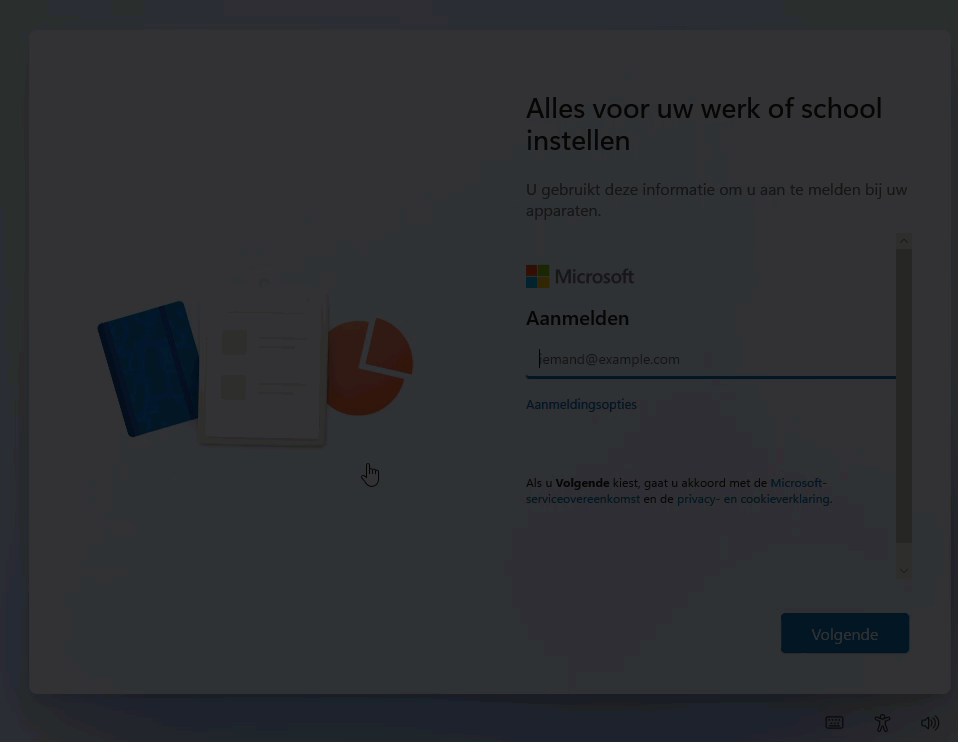
3.3. OOBE, deel 3
In de volgende stappen van de Windows OOBE krijg je verschillende privacygerelateerde vragen. Antwoord op alle vragen “No”.
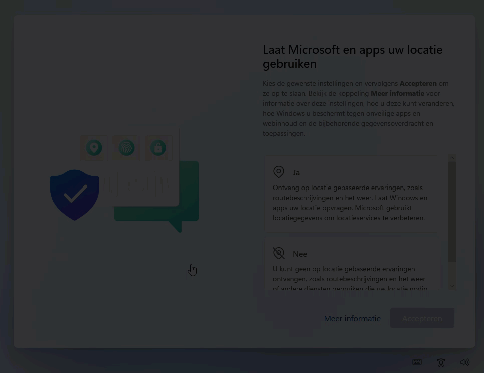
3.4. OOBE, deel 4
Sinds Windows 11 versie 24H2 worden updates automatisch gedownload en geïnstalleerd tijdens de laatste stap van de Windows OOBE. Dit proces kan 30 tot 45 minuten duren, afhankelijk van welke updates in het ISO-installatiebestand zijn opgenomen.
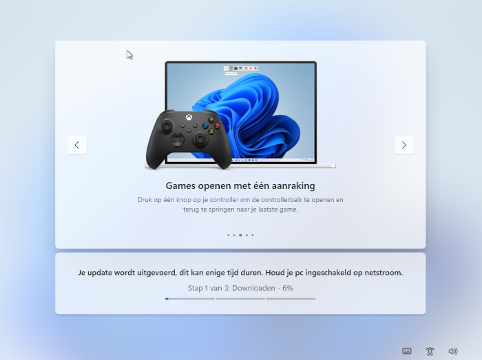
4. Aanmelden
Wanneer de installatie klaar is, zie je het aanmeldscherm. Meld je aan met het wachtwoord dat je tijdens de Windows-installatie hebt aangemaakt.
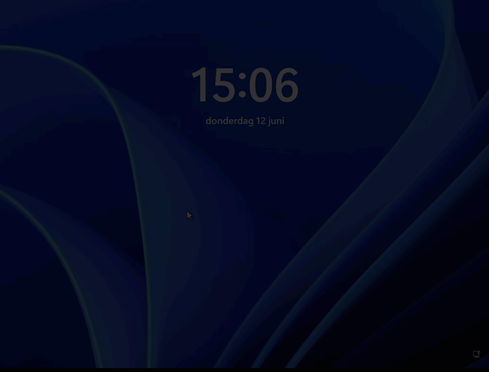
De eerste keer aanmelden duurt ongeveer één minuut omdat het gebruikersprofiel wordt aangemaakt.
5. VMware Tools installeren
Installeer de VMware Tools om een bruikbare schermresolutie te krijgen.
5.1. De installatiewizard van VMware Tools starten
- Klik op "Install Tools" in de gele balk onder het venster van de virtuele machine. (Je kan ook bovenaan op het menu "VM" klikken en "Install VMware Tools" selecteren.)
- Open File Explorer en ga naar This PC.
- Dubbelklik op de VMware Tools-dvd.
- De installer start automatisch.
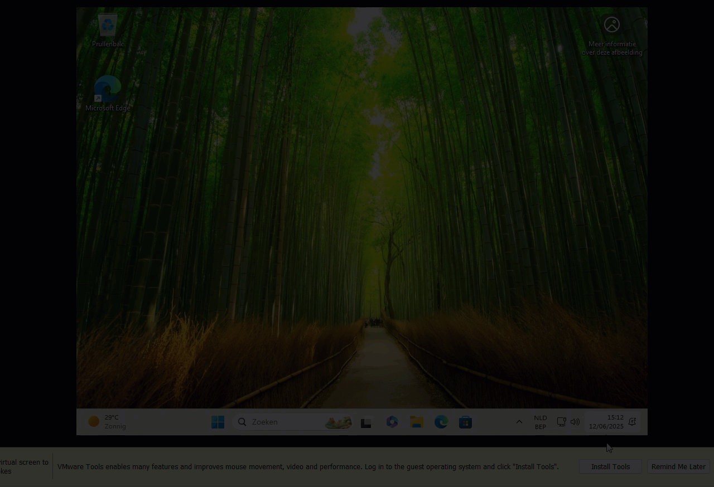
5.2. Wizard van VMware Tools
Laat in de installatiewizard alle standaardinstellingen ongewijzigd. Wanneer de installatie klaar is, word je gevraagd om te herstarten. Klik op Restart om je virtuele machine te herstarten.
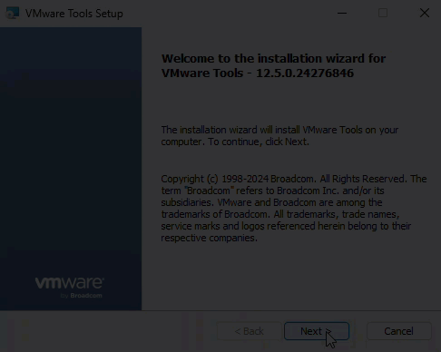
6. Een snapshot nemen
Nadat je virtuele machine is herstart, meld je je opnieuw aan. Zodra je het Windows-bureaublad ziet, neem je een snapshot van je virtuele machine.
- Klik in het VMware-menu op "VM"
- Kies "Snapshot" en selecteer vervolgens "Take Snapshot"
- Geef de snapshot een duidelijke naam, zoals "Windows 11 Clean Install"
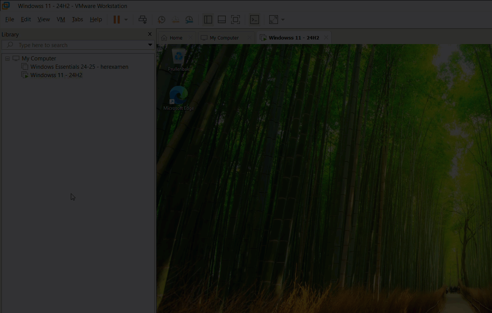